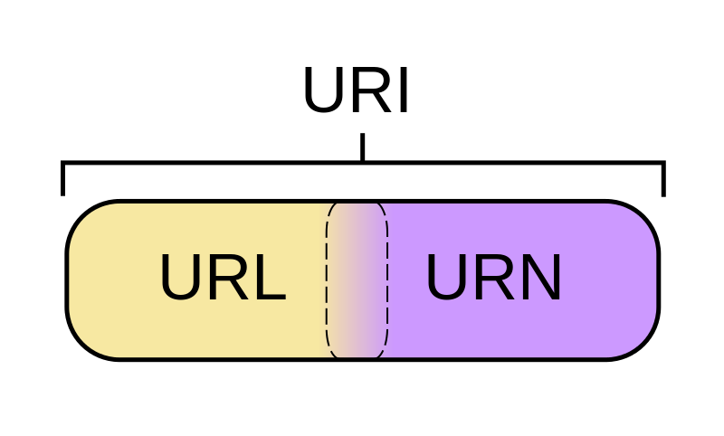

[TOC]
1. 一些基本概念
###1.1 Nginx初步认识
-
Nginx介绍
-
engine x
-
俄罗斯
-
开源的框架
-
c语言
-
Tengine - 淘宝基于nginx修改的
-
-
Nginx能干什么?
- 作为web服务器
- 解析http协议
- 反向代理服务器
- 了解反向代理的概念
- 邮件服务器
- 解析邮件相关的协议: pop3/smtp/imap
- 作为web服务器
-
Nginx的优势?
-
更快
- 高峰期(数以万计的并发时)nginx可以比其它web服务器更快的响应请求
-
高扩展
- 低耦合设计的模块组成,丰富的第三方模块支持
-
高可靠
- 经过大批网站检验
- 每个worker进程相对独立, 出错之后可以快速开启新的worker
- worker进程的个数是可以控制的
- 在后台干活的进程
-
低内存消耗
- 一般情况下,10000个非活跃的HTTP Keep-Alive连接在nginx中仅消耗 2.5M内存
-
单机支持10万以上的并发连接
- 取决于内存,10万远未封顶
-
热部署
- master和worker的分离设计,可实现7x24小时不间断服务的前提下升级nginx可执行文件
-
最自由的BSD许可协议
- BSD许可协议允许用户免费使用nginx, 修改nginx源码,然后再发布
- 淘宝: tengine
- BSD许可协议允许用户免费使用nginx, 修改nginx源码,然后再发布
-
1.2 正向/反向代理
-
正向代理
正向代理是位于客户端和原始服务器之间的服务器，为了能够从原始服务器获取请求的内容，客户端需要将请求发送给代理服务器，然后再由代理服务器将请求转发给原始服务器，原始服务器接受到代理服务器的请求并处理，然后将处理好的数据转发给代理服务器，之后再由代理服务器转发发给客户端，完成整个请求过程。
==正向代理的典型用途就是为在防火墙内的局域网客户端提供访问Internet的途径==, 比如:
- 学校的局域网
- 单位局域网访问外部资源

正向代理服务器是为用户服务的
-
反向代理
反向代理方式是指代理原始服务器来接受来自Internet的链接请求，然后将请求转发给内部网络上的原始服务器，并将从原始服务器上得到的结果转发给Internet上请求数据的客户端。那么顾名思义，反向代理就是位于Internet和原始服务器之间的服务器，对于客户端来说就表现为一台服务器，客户端所发送的请求都是直接发送给反向代理服务器，然后由反向代理服务器统一调配。


-
客户端给服务器发送请求, 连接服务器, 用户不知道服务器地址, 只有反向代理服务器的地址是公开的
-
请求直接发给反向代理服务器
-
反向代理服务器将请求转发给后边的web服务器
- web服务器 N 台
- 反向代理服务器转发请求会轮询进行
-
web服务器收到请求进行处理, 得到结果
-
web服务器将处理结果发送给反向代理服务器
-
反向代理服务器将拿到的结果转发给客户端
1.3 域名和IP
- 什么是域名？
- www.baidu.com
- jd.com
- taobao.com
- 什么是IP地址？
- 点分十进制的字符串
- 11.22.34.45
- 点分十进制的字符串
- 域名和IP地址的关系？
- 域名绑定IP
- 一个域名只能绑定一个IP
- 一个IP地址被多个域名绑定
- 域名绑定IP
2. Nginx 安装和配置
###2.1 安装
-
下载
- 官方地址: http://nginx.org/
- Nginx相关依赖:
- OpenSSL: http://www.openssl.org/
- 密码库
- 使用https进行通信的时候使用
- ZLib下载: http://www.zlib.net/
- 数据压缩
- 安装:
- ./configure
- make
- sudo make install
- PCRE下载: http://www.pcre.org/
- 解析正则表达式
- 安装
- ./configure
- make
- sudo make install
- OpenSSL: http://www.openssl.org/
-
安装
-
nginx的安装
1 2 3 4 5 6# nginx工作时候需要依赖三个库 # 三个参数=这三个库对应的源码安装目录 # 根据自己的电脑的库安装包的位置进行指定 ./configure --with-openssl=../openssl-1.0.1t --with-pcre=../pcre-8.40 --with-zlib=../zlib-1.2.11 make sudo make install

-
-
Nginx 相关的指令
-
Nginx的默认安装目录
1 2 3 4 5/usr/local/nginx conf -> 存储配置文件的目录 html -> 默认的存储网站(服务器)静态资源的目录 [图片, html, js, css] logs -> 存储log日志 sbin -> 启动nginx的可执行程序 -
Nginx可执行程序的路径
1 2 3 4 5/usr/local/nginx/sbin/nginx # 快速启动的方式 # 1. 将/usr/local/nginx/sbin/添加到环境变量PATH中 # 2. /usr/local/nginx/sbin/nginx创建软连接, 放到PATH对应的路径中, 比如: /usr/bin ln -s /usr/local/nginx/sbin/nginx /usr/bin/nginx -
启动Nginx - 需要管理器权限
1 2# 假设软连接已经创建完毕 sudo nginx # 启动 -
关闭Nginx
1 2 3 4# 第一种, 马上关闭 sudo nginx -s stop # 第二种, 等nginx作为当前操作之后关闭 sudo nginx -s quit -
重新加载Nginx
1sudo nginx -s reload # 修改了nginx的配置文件之后, 需要执行该命令 -
测试是否安装成功
- 知道nginx对应的主机的IP地址 - > 192.168.1.100
- 在浏览器中访问该IP地址
- 看到一个welcom nginx的欢迎界面
-
2.2 配置
-
Nginx配置文件的位置
1/usr/local/nginx/conf/nginx.conf -
Nginx配置文件的组织格式

- http -> 模块, http相关的通信设置
- server模块 -> 每个server对应的是一台web服务器
- location 模块
- 处理的是客户端的请求
- location 模块
- server模块 -> 每个server对应的是一台web服务器
- mail -> 模块, 处理邮件相关的动作
- http -> 模块, http相关的通信设置
-
常用配置项介绍
1 2 3 4 5 6 7 8 9 10 11 12 13 14 15 16 17 18 19 20 21 22 23 24 25 26 27 28 29 30 31 32user nobody; # 启动之后的worker进程属于谁 - 错误提示: nginx操作xxx文件时候失败, 原因: Permission denied - 将nobody -> root worker_processes 1; # 设置worker进程的个数, 最大 == cpu的核数 (推荐) error_log logs/error.log; # 错误日志, /usr/local/nginx pid logs/nginx.pid; # pid文件, 里边是nginx的进程ID # nginx的事件处理 events { use epoll; # 多路IO转接模型使用epoll worker_connections 1024; // 每个工作的进程的最大连接数 } http->server -> 每个server模块可以看做一台web服务器 server{ listen 80; # web服务器监听的端口, http协议的默认端口 server_name localhost; # 对应一个域名, 客户端通过该域名访问服务器 charset utf8; # 字符串编码 location { // 模块, 处理客户端的请求 } # 客户端 (浏览器), 请求: http://192.168.10.100:80/login.html # 服务器处理客户端的请求 服务器要处理的指令如何从url中提取? - 去掉协议: http - 去掉IP/域名+端口: 192.168.10.100:80 - 最后如果是文件名, 去掉该名字: login.html - 剩下的: / 服务器要处理的location指令: location / { 处理动作 }
3. Nginx的使用
3.1 部署静态网页
-
静态网页存储目录
-
默认的存储目录:
1/usr/local/nginx/html -
自己创建新的目录:
1 2应该在 /usr/local/nginx/ mkdir /usr/local/nginx/mydir
-
-
练习
在Nginx服务器上进行网页部署, 实现如下访问:
在/usr/local/nginx/创建新的目录, yundisk用来存储静态网页
-
访问地址: http://192.168.80.254/login.html
-
login.html放到什么位置?
1 2/ -> 服务器的资源根目录, /usr/local/nginx/yundisk login.htm-> 放到yundisk中 -
服务器要处理的动作
1 2 3 4 5 6 7 8 9 10# 对应这个请求服务器要添加一个location location 指令(/) { # 找一个静态网页 root yundisk; # 相对于/usr/local/nginx/来找 # 客户端的请求是一个目录, nginx需要找一默认显示的网页 index index.html index.htm; } # 配置之后重启nginx sudo nginx -s reload
-
-
访问地址: http://192.168.80.254/hello/reg.html
-
hello是什么?
- 目录
-
reg.html放到哪儿?
- hello目录中
-
如何添加location
1 2 3 4 5location /hello/ { root yundisk; index xx.html; }
-
-
访问地址: http://192.168.80.254/upload/ 浏览器显示upload.html
-
直接访问一个目录, 得到一默认网页
-
upload是一个目录, uplaod.html应该再upload目录中
1 2 3 4 5location /upload/ { root yundisk; index upload.html; }
-
-
-
3.2 反向代理和负载均衡
反向代理和负载均衡是两码事儿

准备工作:
- 需要客户端 - 1个
- Window中的浏览器作为客户端
- 反向代理服务器 -> 1个
- window作为反向代理服务器
- web服务器 -> 2个
- ubuntu - robin: 192.168.247.135
- ubuntu - luffy : 192.168.26.250
-
反向代理设置

1 2 3 4 5 6 7 8 9 10 11 12 13 14 15 16 17 18 19 20 21 22 23 24 25 26 27 28 29 30 31 32 33 34找window上对应的nginx的配置文件 - conf/nginx.conf # 代理几台服务器就需要几个server模块 # 客户端访问的url: http://192.168.1.100/login.html server { listen 80; # 客户端访问反向代理服务器, 代理服务器监听的端口 server_name ubuntu.com; # 客户端访问反向代理服务器, 需要一个域名 location / { # 反向代理服务器转发指令, http:// 固定 proxy_pass http://robin.test.com; } } # 添加一个代理模块 upstream robin.test.com { server 192.168.247.135:80; } # luffy server { listen 80; # 客户端访问反向代理服务器, 代理服务器监听的端口 server_name hello.com; # 客户端访问反向代理服务器, 需要一个域名 location / { # 反向代理服务器转发指令, http:// 固定 proxy_pass http://luffy.test.com; } } # 添加一个代理模块 upstream luffy.test.com { server 192.168.26.250:80; } } -
负载均衡设置

1 2 3 4 5 6 7 8 9 10 11 12 13 14 15 16 17 18 19 20 21 22 23 24 25 26 27 28 29 30 31 32 33 34 35 36 37 38 39 40 41 42 43 44 45 46 47 48 49 50 51 52 53 54 55 56 57 58server { listen 80; # 客户端访问反向代理服务器, 代理服务器监听的端口 server_name localhost; # 客户端访问反向代理服务器, 需要一个域名 location / { # 反向代理服务器转发指令, http:// 固定的头 proxy_pass http://linux.com; } location /hello/ { # 反向代理服务器转发指令, http:// 固定的头 proxy_pass http://linux.com; } location /upload/ { # 反向代理服务器转发指令, http:// 固定的头 proxy_pass http://linux.com; } } # 添加一个代理模块 upstream linux.com { server 192.168.247.135:80 weight=1; server 192.168.26.250:80 weight=3; } ## ===================================== web服务器需要做什么? # 192.168.247.135 location / { root xxx; index xxx; } location /hello/ { root xx; index xxx; } location /upload/ { root xxx; index xx; } # 192.168.26.250 location / { root xxx; index xxx; } location /hello/ { root xx; index xxx; } location /upload/ { root xxx; index xx; }
课外知识导读
1. URL和URI
-
概念:
-
URL（Uniform Resource Locator）: 统一资源定位符
-
表示资源位置的字符串
- 基本格式: “==协议://IP地址/路径和文件名==”
-
URN（Uniform Resource Name）: 统一资源名称
- P2P下载中使用的磁力链接
-
URI（Uniform Resource Identifier）: 统一资源标识符
- 是一个紧凑的字符串用来标示抽象或物理资源, ==URL是URI的一种==
- 让URI能成为URL的当然就是那个“访问机制”，“网络位置”。e.g.
http://orftp://。- files.hp.com
- tel:+1-816-555-1212
- ftp://ftp.is.co.za/rfc/rfc1808.txt （also a URL）
- http://www.ietf.org/rfc/rfc2396.txt （also a URL）
- telnet://192.0.2.16:80/ （also a URL）
-
-
经验式理解:

从包含关系上说: URI包含URL
字符串长度上说: URL包含URI
UIRI可以没有协议, 没有地址(IP/域名)
| URL | 红色字体部分+绿色字体部分 |
|---|---|
| URI | 绿色字体部分 |
2. DNS解析过程

-
DNS解析的过程
- 在浏览器中输入www.magedu.com域名，操作系统会先检查自己本地的hosts文件是否有这个网址映射关系，如果有，就先调用这个IP地址映射，完成域名解析。
- 如果hosts里没有这个域名的映射，则查找本地DNS解析器缓存，是否有这个网址映射关系，如果有，直接返回，完成域名解析。
- Windows和Linux系统都会在本地缓存dns解析的记录，提高速度。
- 如果hosts与本地DNS解析器缓存都没有相应的网址映射关系，首先会找
TCP/IP参数中设置的首选DNS服务器，在此我们叫它本地DNS服务器，此服务器收到查询时，如果要查询的域名，包含在本地配置区域资源中，则返回解析结果给客户机，完成域名解析，此解析具有权威性。 - 如果要查询的域名，不由本地DNS服务器区域解析，但该DNS服务器已缓存了此网址映射关系，则调用这个IP地址映射，完成域名解析，此解析不具有权威性。
- 如果本地DNS服务器本地区域文件与缓存解析都失效，则根据本地DNS服务器的设置（没有设置转发器）进行查询，如果未用转发模式，本地DNS就把请求发至13台根DNS，根DNS服务器收到请求后会判断这个域名(.com)是谁来授权管理，并会返回一个负责该顶级域名服务器的一个IP。本地DNS服务器收到IP信息后，将会联系负责 .com域的这台服务器。这台负责 .com域的服务器收到请求后，如果自己无法解析，它就会找一个管理 .com域的下一级DNS服务器地址(magedu.com)给本地DNS服务器。当本地DNS服务器收到这个地址后，就会找magedu.com域服务器，重复上面的动作进行查询，直至找到www.magedu.com主机。
- 如果用的是转发模式（设置转发器），此DNS服务器就会把请求转发至上一级ISP DNS服务器，由上一级服务器进行解析，上一级服务器如果不能解析，或找根DNS或把转请求转至上上级，以此循环。不管是本地DNS服务器用是是转发，还是根提示，最后都是把结果返回给本地DNS服务器，由此DNS服务器再返回给客户机。
-
域名解析服务器
-
Pod DNS+:
- 首选：119.29.29.29
- 备选：182.254.116.116
-
114DNS:
- 首选：114.114.114.114
- 备选：114.114.114.115
-
阿里 AliDNS:
-
首选：223.5.5.5
-
备选：223.6.6.6
-
-
-
hosts文件
1 2# 存储的是域名和IP的对应关系 -windows目录: "C:\Windows\System32\drivers\etc\hosts"复习
redis
-
是什么?
- 非关系型数据库 - nosql
- 数据存储在内存里边
- 非关系型数据库 - nosql
-
能干什么?
- 提高程序效率
- 程序中频繁访问的数据, 可以存储到redis中
-
我们需要干什么?
-
会安装
-
掌握启动redis服务器和客户端的启动命令
1 2 3 4# 服务器 redis-server (配置文件名) # 客户端 redis-cli (-h redis服务器IP -p 端口) -
redis中支持的数据类型 - value
-
键值对方式存储数据
- key - 字符串
- value
- 字符串 - string
- 列表 - list
- 集合 - set
- 排序集合 - sortedSet
- 哈希 - hash
-
关于服务器使用的配置文件的修改
-
redis中持久化
- rdb
- aof
-
-
-
能够在程序中操作redis服务器
- 需要使用以下函数接口
- 官方地址 - > 客户端 -> 选择语言
-